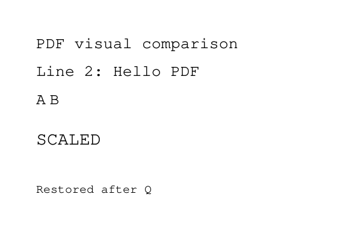

PDF 畫面與實際解析結果對照
左側是實際 PDF 頁面渲染；右側是目前 pdftext 的真實 CLI 輸出及外部參考文字。M7 尚未做字型 Unicode 解碼或座標計算，M8 尚未實作。因此成功解析、畫面內容核對與 geometry 一致性是分開記錄的驗收結果。
原始字串 HEX 來自 M7 visitor；ASCII_PREVIEW 只便於核對本測試頁，不是正式文字提取。TEXT_SHOWS 計操作數：這頁 5 次文字顯示操作包含 6 個字串片段。
可成功解析的真實 PDF 測試頁
已核對 M7 操作數與 ASCII bytes 內容／順序；M8 座標尚未實作。
原始 PDF · CLI stdout · CLI stderr · Poppler 參考文字 · Poppler word bboxes

原始 PDF 第 1 頁，Poppler 120 DPI，未加 overlay
本專案實際輸出
PAGES 1
PAGE 1 OPS 22 TEXT_SHOWS 5
本專案 stderr
(stderr 為空)
外部參考：Poppler pdftotext
PDF visual comparison
Line 2: Hello PDF
AB
SCALED
Restored after Q
M6/M7 實際診斷 trace（非 geometry 結果）
PAGE 1 DECODED_BYTES 237
DECODED_PREFIX /F1 16 Tf\x0ABT\x0A1 0 0 1 36 192 Tm\x0A(PDF visual comparison) Tj\x0A0 -28 TD\x0A(Line 2: Hello PDF) Tj\x0AT*\x0A[(A) -250 (B)] TJ\x0AET\x0Aq\x0A1.5 0 0 1.5 0 0 cm\x0ABT\x0A/F1 12 Tf\x0A1 0 0 1 24 6
OP decoded=7 Tf NAME_HEX=4631 16
OP decoded=10 BT
OP decoded=28 Tm 1 0 0 1 36 192
OP decoded=55 Tj STRING_HEX=5044462076697375616C20636F6D70617269736F6E
RAW_STRING_HEX 5044462076697375616C20636F6D70617269736F6E
ASCII_PREVIEW PDF visual comparison
OP decoded=64 TD 0 -28
OP decoded=87 Tj STRING_HEX=4C696E6520323A2048656C6C6F20504446
RAW_STRING_HEX 4C696E6520323A2048656C6C6F20504446
ASCII_PREVIEW Line 2: Hello PDF
OP decoded=90 T*
OP decoded=108 TJ [STRING_HEX=41 -250 STRING_HEX=42]
RAW_STRING_HEX 41
ASCII_PREVIEW A
RAW_STRING_HEX 42
ASCII_PREVIEW B
OP decoded=111 ET
OP decoded=114 q
OP decoded=132 cm 1.5 0 0 1.5 0 0
OP decoded=135 BT
OP decoded=145 Tf NAME_HEX=4631 12
OP decoded=162 Tm 1 0 0 1 24 64
OP decoded=174 Tj STRING_HEX=5343414C4544
RAW_STRING_HEX 5343414C4544
ASCII_PREVIEW SCALED
OP decoded=177 ET
OP decoded=180 Q
OP decoded=182 BT
OP decoded=192 Tf NAME_HEX=4631 12
OP decoded=209 Tm 1 0 0 1 36 48
OP decoded=231 Tj STRING_HEX=526573746F7265642061667465722051
RAW_STRING_HEX 526573746F7265642061667465722051
ASCII_PREVIEW Restored after Q
OP decoded=234 ET
PAGE 1 OPS 22 TEXT_SHOWS 5
現有 hello.pdf
Poppler 可顯示與提取參考文字；本專案在第一個 w operator 停止（exit 4）。
原始 PDF · CLI stdout · CLI stderr · Poppler 參考文字 · Poppler word bboxes
 原始 PDF 第 1 頁，Poppler 120 DPI，未加 overlay
原始 PDF 第 1 頁，Poppler 120 DPI，未加 overlay
本專案實際輸出
(stdout 為空)
本專案 stderr
content: unsupported error at byte 7437: decoded byte 4: content operator is not supported
外部參考：Poppler pdftotext
test pdf format
hello,world
M6/M7 實際診斷 trace（非 geometry 結果）
PAGE 1 DECODED_BYTES 288
DECODED_PREFIX 0.1 w\x0A/Artifact BMC\x0Aq 0 0.028 595.275 841.861 re\x0AW* n\x0AEMC\x0A/Preformatted#20Text<</MCID 0>>BDC\x0Aq 0 0 0 rg\x0ABT\x0A56.8 776.839 Td /F1 10 Tf<0102030104050607040708090A0
現有 compilerbook.pdf 第 1 頁
Poppler 可顯示封面；本專案尚不支援 xref stream，未進入 Contents／M7（exit 4）。
原始 PDF · CLI stdout · CLI stderr · Poppler 參考文字 · Poppler word bboxes
 原始 PDF 第 1 頁，Poppler 120 DPI，未加 overlay
原始 PDF 第 1 頁，Poppler 120 DPI，未加 overlay
本專案實際輸出
(stdout 為空)
本專案 stderr
xref: unsupported error at byte 1306685: xref streams are unsupported
外部參考：Poppler pdftotext
Introduction to Compilers
and Language Design
Second Edition
Prof. Douglas Thain
University of Notre DameM6/M7 實際診斷 trace（非 geometry 結果）
未取得 decoded content
來源 SHA-256、命令、工具版本與核對結果 · 使用真實 M6/M7 接口的診斷程式